Selection Methods
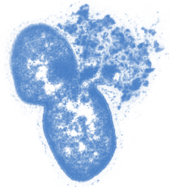

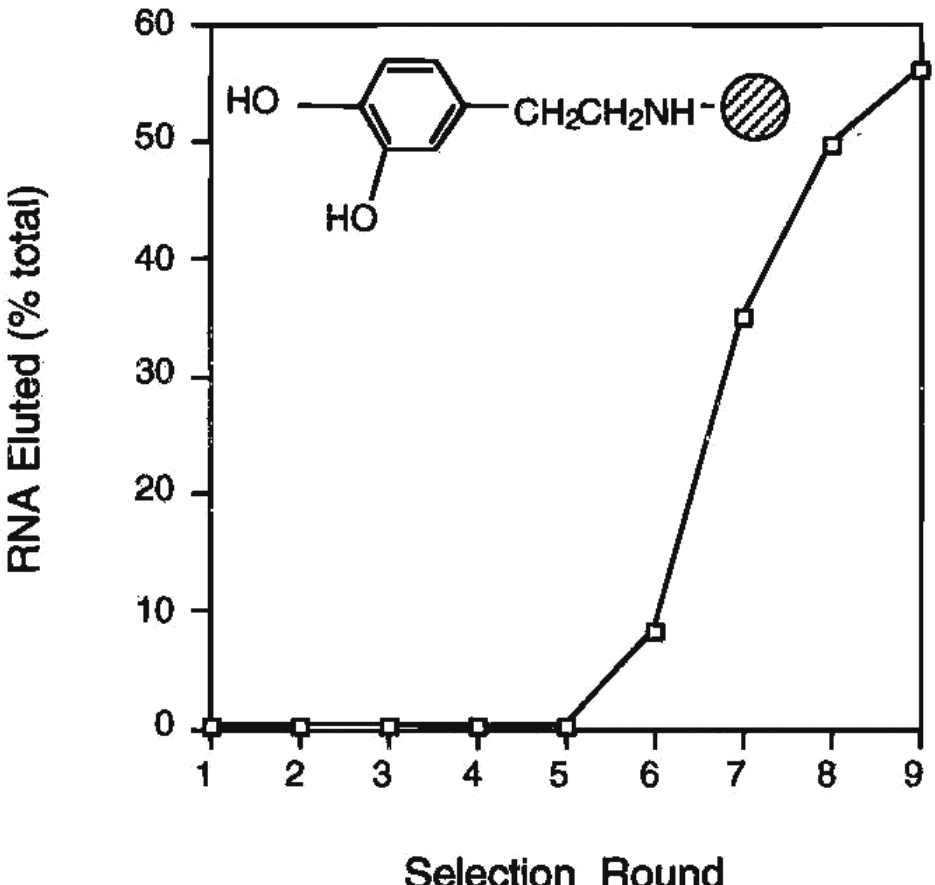
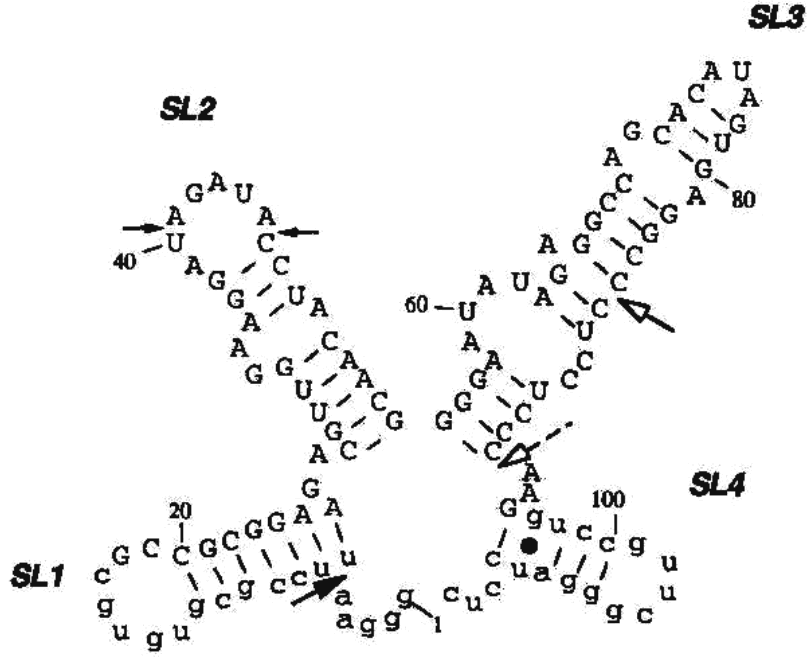
Biochemistry. 1997 Aug 12;36(32):9726-34. PMID: 9245404
Typically it takes around 5 or 6 rounds of selection to see a signal, but if all goes well and you have hits, you’ll eventually get to a point where more of the material begins appearing after elution. At this point you would clone the library, pick individual members to sequence, and then characterize those hits further individually. New improvements to SELEX involve using microfluidic platforms for improved enrichment, and as we’ll talk about in the multiplex lecture, applying deep sequencing to characterize the hit pool. What a working SELEX looks like: five rounds of nothing, then the eluted fraction climbs from a few percent to most of the pool, and the sequences that came out of it fold into a defined four-stem structure.Specificity - how well the selection prefers the hit over the non-hit
Recovery - what fraction of the hits survive the selection
Enrichment – the fraction of hits in the final population divided by the initial population
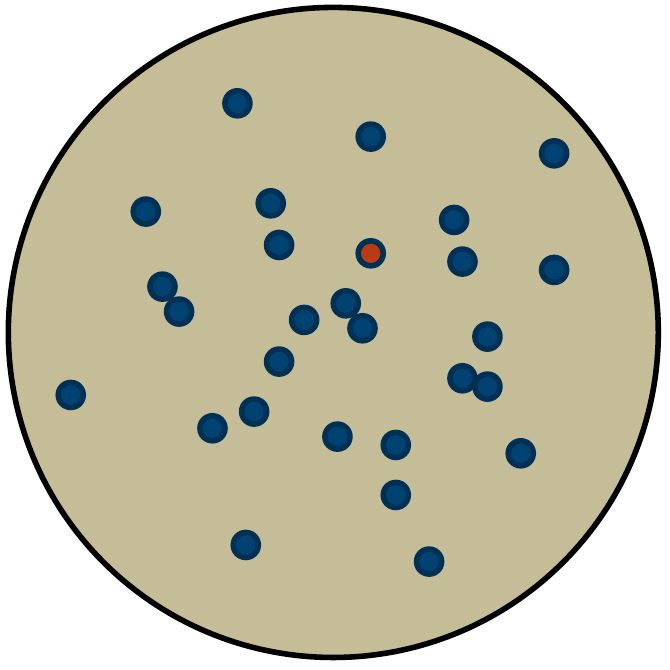
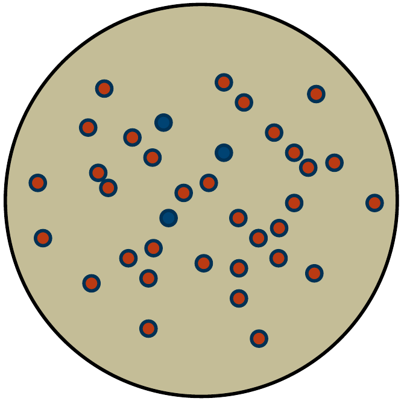
93 blue
1 red
red/(red+blue) = 0.0106
3 blue
183 red
red/(red+blue) = 0.984
Enrichment = 0.984/0.0106 = 92
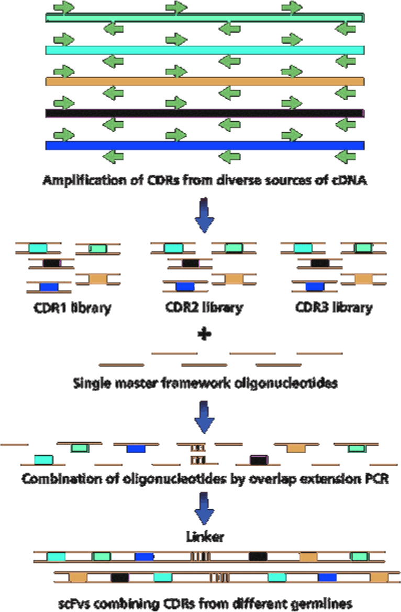
“antibody phage display” = 2419 hits in pubmed
Nat Biotechnol. 2002 Dec;20(12):1189-90. PMID: 12454662 · Mol Cells. 2009 Feb;27(2):225-35. PMID: 19277506 · Nat Protoc. 2007;2(11):3001-8. PMID: 18007636
Yeast Display:
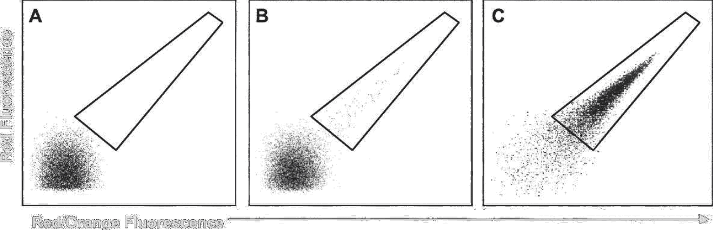
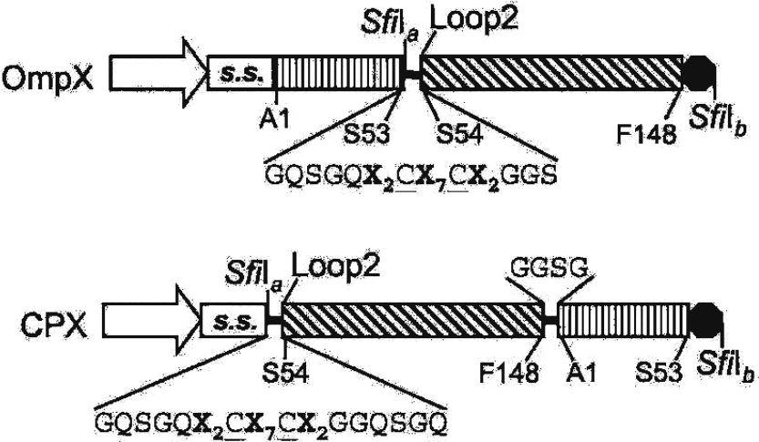
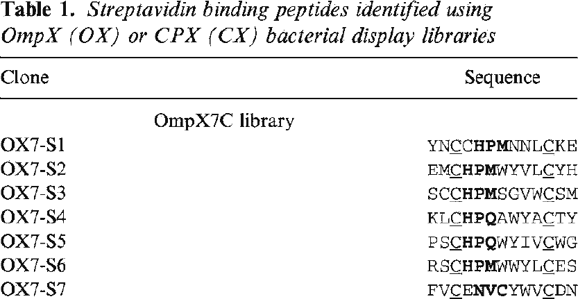
Protein Sci. 2006 Apr;15(4):825-36. PMID: 16600968
The E. coli systems are all based on inserting or fusing a peptide into a cell-surface display protein. There are many such systems including OmpX and CPX which are outer membrane barrel proteins derived from E. coli. Probably the most robust is ice nucleation protein. You can reliably display peptides up to ~80 amino acids on the surface, but longer proteins have a much lower success rate. In this version, they are placing an X2CX7CX2 peptide in a loop of the protein. They show that the disulfides are helpful in constraining the conformation of the peptide resulting in better hits. Bacterial surface display: a constrained peptide, two cysteines around seven random residues, dropped into a loop of the OmpX barrel or onto the end of its circular permutant.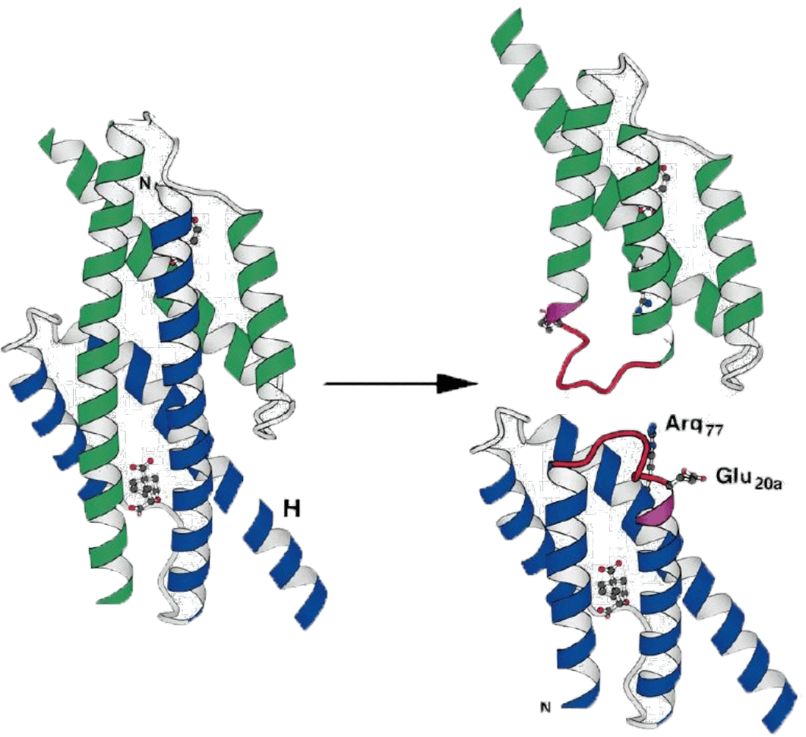
Linker Library:
-Leu20-Lys21-Xaa-Xaa-Xaa-Xaa-Xaa-Xaa-Leu20a-Lys21a
KA12/pKIMPUAUC: E. coli strain with chorismate mutase gene knocked out
Grow library on minimal media (without supplying aromatic amino acids)
Science. 1998 Mar 20;279(5358):1958-61. PMID: 9506949
Here is an example of protein engineering using a complementation selection by Hilvert. They begin with a chorismate mutase knockout strain. This enzyme is involved in the biosynthesis of the aromatic amino acids, so mutants need to be fed aromatic amino acids (tyrosine, phenylalanine) to survive on minimal media. They then construct a library derived from the original gene. Wild-type chorismate mutase is a domain-swapped dimer, and they examined the crystal structure to identify a site in which each monomer could be cleaved in half, and then rejoined by a random linker. If the linker can satisfy the structural constraints, the topology of the enzyme would be changed resulting in a monomeric version. The library contained 6 X sites (or NNK sites). They insert the library into the knockout strain and then grow on minimal media. They pull out hits and go on to confirm that they are indeed monomers. A complementation selection that changed a protein's topology: six random residues used as a linker to rejoin the halves of a domain-swapped dimer, selected simply by whether the knockout strain could grow without aromatic amino acids.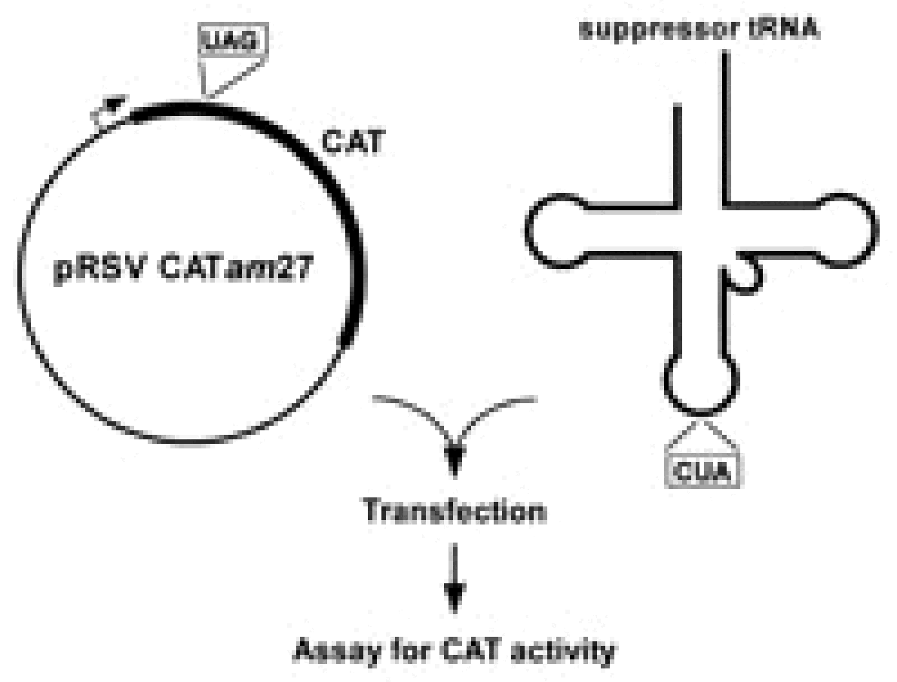
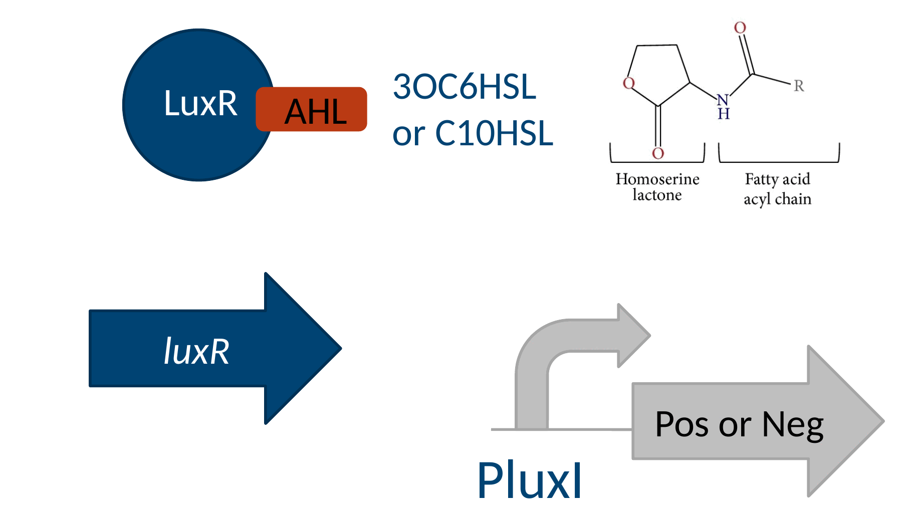
Nat Biotechnol. 2006 Jun;24(6):708-12. PMID: 16715074
Let’s look at an example of a synthetic selection. Let’s say you want to engineer the substrate specificity of LuxR. LuxR is a transcription factor from Vibrio fischeri that binds to a homoserine lactone small molecule and in response activates transcription from the LuxI promoter. It’s a component of quorum sensing systems and a very popular gene in synthetic biology. You want to make a library out of the LuxR active site and then select for variants that respond to a different small molecule. There is no LuxR-like activity in E. coli natively, so there is no gene to knockout that it would complement, so those experiments are out. Perhaps you could do a panning experiment against the new substrate immobilized on a column, but that would be a selection for binding, not for the combination of binding and transduction. The easiest solution here is going to be some type of synthetic selection. There probably are better micelle-based solutions to be developed, but of the existing technologies an in vivo selection will do the job the best. Here, Arnold has placed a chloramphenicol resistance gene downstream of luxI. If a functional luxR is present, then the luxI promoter will turn on. If luxI promoter gets activated, the cell will survive in the presence of chloramphenicol. So, operationally, you would construct a strain with this PluxI-CmR cassette, usually on a plasmid, and then introduce a library of LuxR variants then select for survival on the new small molecule (here, C10HSL) and sequence what survives. This type of genetic selection can be applied to any transcriptional process – whatever it is you want to select for, if it turns on a promoter in the end you can hook it up to a selectable marker and make it selectable. That also applies to any singular interaction within a transcriptional activation process. The circuit behind the selection: LuxR binds a homoserine lactone and turns on PluxI, so putting a selectable marker downstream of PluxI makes the cell's fate depend on which lactone LuxR will accept.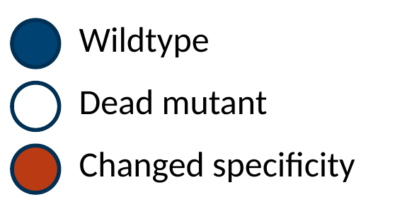
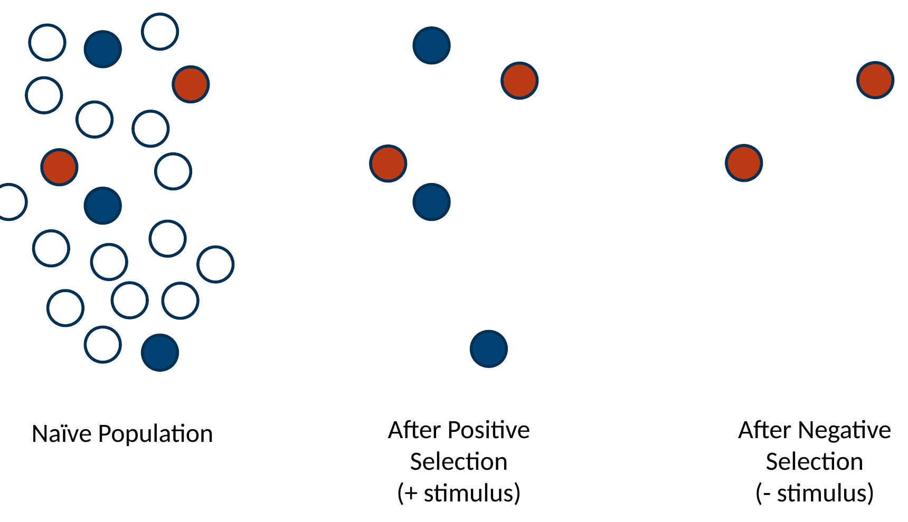
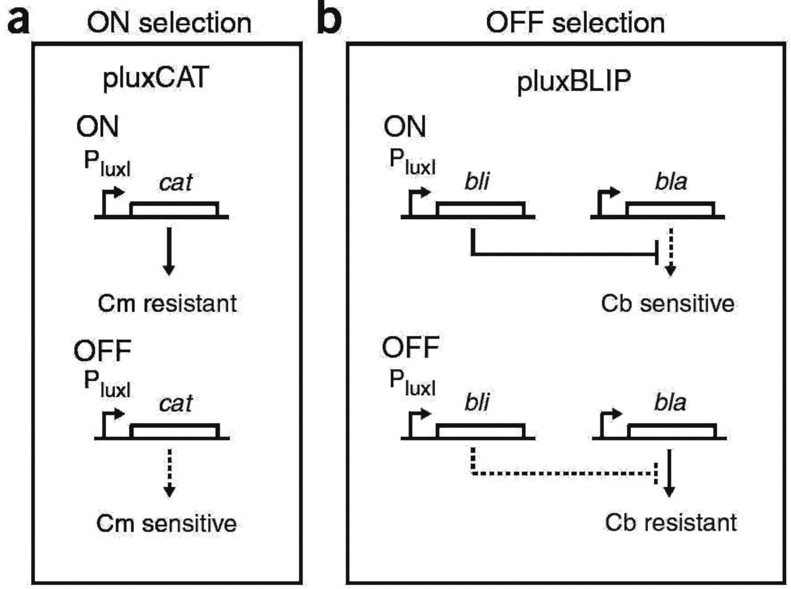
Nat Biotechnol. 2006 Jun;24(6):708-12. PMID: 16715074
For positive selection, they employ the PluxI-cat construct as discussed before. For the negative selection, the LuxI promoter drives the blip gene encoding a beta-lactamase inhibitory protein. They also provide a constitutively-expressed Bla gene. The selection strain here is ampicillin resistant. However, if PluxI is activated, BLIP is expressed, Bla is inactivated, and the cells die on the antibiotic. So, you can select against a functional LuxR. Operationally, they first apply the ON selection in the presence of their new small molecule C10HSL. They then apply the negative selection in the presence of the old small molecule 3OC6HSL. If you just apply the positive selection in such an experiment, you tend to pull out many variants that are constitutively on either by responding to an endogenous metabolite or by an internal conformation change. However, when you include the negative selection, the only things that can pass both selections are the ones specific to the small molecule. The two halves of the dual selection drawn out: PluxI driving chloramphenicol resistance for the ON round, and PluxI driving a beta-lactamase inhibitor for the OFF round, so the same promoter can be made to save the cell or kill it.